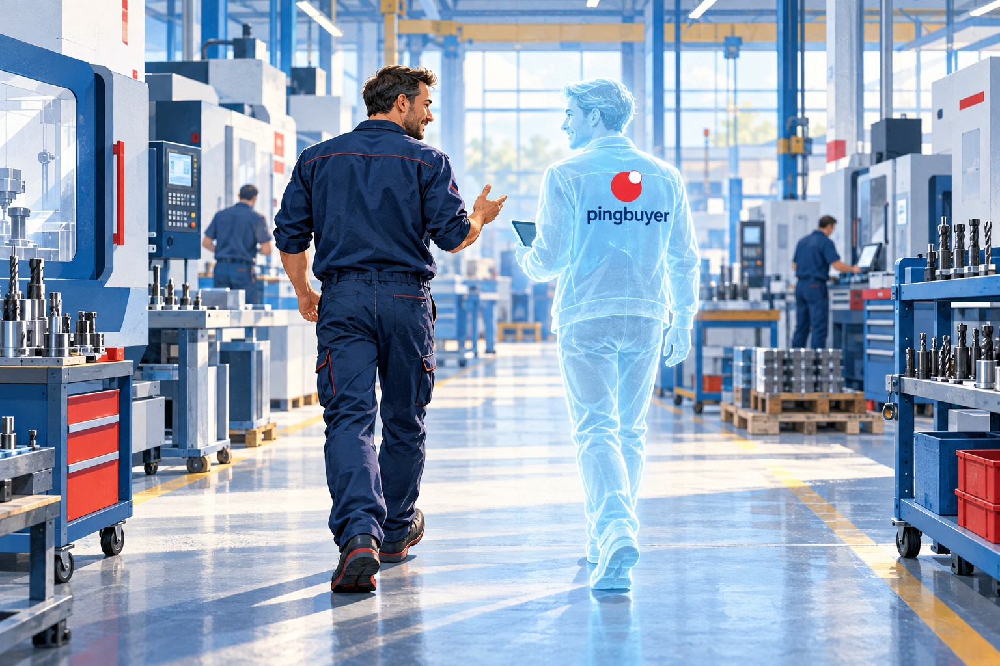

Parlez. Écrivez. Photographiez.
Une demande orale, un message ou la photo d’une pièce. Une interface adaptée à l’atelier sur mobile, aux tableaux au bureau.
Parlez-lui comme à un collègue.
Il s’occupe de vos achats.

Un acheteur IA pensé pour suivre vos achats, du besoin au contrôle des factures, selon les règles que vous fixez.
Une demande orale, un message ou la photo d’une pièce. Une interface adaptée à l’atelier sur mobile, aux tableaux au bureau.
Un parcours pensé pour trouver les fournisseurs, comparer les offres, commander et relancer à votre place, selon vos règles.
Réceptions partielles, écarts, retours et avoirs. Les décisions à valider restent visibles, selon vos seuils et vos délégations.
Commandes, réceptions et factures reliées. Vous repérez ce qui est conforme, ce qui bloque et ce qui attend votre accord.
| Facture | Commande | Fournisseur | Montant TTC | Contrôle | Statut |
|---|---|---|---|---|---|
| INV-041 | PO-041 | Meca Démo | 384,00 € | Écart de quantité | Bloquée |
| INV-042 | PO-042 | Meca Démo | 288,00 € | Conforme | Bonne à payer |
| INV-043 | PO-043 | Meca Démo | 576,00 € | Conforme | À approuver |
Le parcours prévu : recevoir les factures par email, les rapprocher des commandes et des réceptions acceptées, puis préparer la liste à payer. Le paiement bancaire sera optionnel, avec seuils et validations.
La démo permet de parcourir les fiches, rechercher et exporter les exemples. IA, email et paiement ne sont pas encore connectés.
Un même parcours sur téléphone et ordinateur, disponible en sept langues.